The Legends and Myths of Kentucky
What Lurks in The Bluegrass State?
Map Credits
Author Credits and Data Sources
This map and webpage were made for MAP673-201's (Spring 2026) final project. Sources for the Kentucky legends dataset are included below. Not all legends mentioned in the sources were used, only those that are the most common and/or most intruiging according to me.
Find more about my work and other projects on my GitHub linked in the footer!
- 1. Mythical Encyclopedia
- Pope Lick Monster
- The Kentucky Goblins (Kelly-Hopkinsville)
- The Wampus Cat
- The Beast of Land Between the Lakes
- The Tailypo
- The Herrington Lake Monster
- Green River Mermaids
- The Hillbilly Beast
- Ghost Horses of Mammoth Cave
- Tommyknockers of the Mines
- The Witch of Cedar Grove
- Specters of the Cumberland
- The Black Shuck (likely referring to Hellhound of Pike County)
- Black Mountain Lion (likely referring to Panther of Pine Mountain)
- 2. Folk Bestiary
- Kelly-Hopkinsville Goblins
- Pope Lick Monster
- Hellhound of Pike County
- Bearilla
- Panther of Pine Mountain
- 3. Fox56 News
- The Herrington Lake Monster
- The Pope Lick Monster
- Kelly Little Green Men (Goblins)
- Bigfoot
- 4. Hangar 1 Publishing
- Bigfoot
- The Pope Lick Monster
- The Mothman
- Bearilla
- Sheepsquatch
- The Kelly Green Men (Hopkinsville Goblins)
- The Giraffe-Possum
- The Herrington Lake Monster
- The Boonesborough Octopus
- 5. Lexington Herald-Leader
- The Pope Lick Monster
- The Mothman
- The Sheepsquatch
- Bearilla
- Little Green Men of Kelly (Goblins)
- Beast Between the Lakes
- Giraffe-Possums
- Milton Lizard
- The Herrington Lake Monster
- The Boonesborough Octopus
- Demon Leaper
- 6. Ancestral Findings
- Sleepy Hollow Road
- Cop Ghost of Narrows Road
- Goatman of Fisherville (Pope Lick Monster)
- Twin Train Tunnels of Lambs Ferry Road
- Witch Child of Pilot's Knob
- 7. Only In Your State
- Hogan's Fountain Statue of Pan
- 8. Ranker
- The Hanging Man of Allendale Train Tunnel
About This Map
Wow, I can't believe this actually works a little bit!
Image Info
Sources for Images. Illustrations, and Photos
Noted here is a collection of all sources for the image gallery as best as I can track them down. I have taken care to collect images from sources that can be used under fair use, as I believe this project falls under the category of educational use. If you are the owner of any of the images used in this page and would like to have them removed, please contact me and I will be happy to take them down.
- 1. Bearilla (original artist unknown)
- 2. Beast of the Land Between the Lakes (original artist unknown)
- 3. Bigfoot (photograph via trailcam: Rick Jacobs)
- 4. Boonesborough Octopus (original artist unknown)(artwork is of the Oklahoma Octopus, a similar creature)
- 5. Cop Ghost of Narrows Road
- 6. Demon Leaper (Adobe Stock (Jeff Dalton))
- 7. Ghost Horses (Adobe Stock (-Misha))
- 8. Giraffe-Possum(there is no rendition of this creature, so I made a graphic to represent "unknown")
- 9. Green River Mermaids (Adobe Stock (Геннадий Кучин))
- 10. Hanging Man of Allendale Train Tunnel (photographer: Abandoned Tube Stations on YouTube)
- 11. Hellhound of Pike County (photo from Mountain Monsters series, "Kentucky Hellhound of Pike County" episode "Hellhound of Pike County")
- 12. Herrington Lake Monster (original artist unknown)
- 13. Hillbilly Beast (from www.geocaching.com)
- 14. Hogan's Fountain Statue of Pan (original photographer unknown)
- 15. Kelly-Hopkinsville Goblins (artist: Andrew (Bud) Ledwith)
- 16. Milton Lizard (original artist unknown)
- 17. Mothman (Adobe Stock (GARETH))
- 18. Panther of Pine Mountain (original photographer unknown)(photo is of Blue Mountain Panther, a similar creature)
- 19. Pope Lick Monster (Goatman of Fisherville) (original source unknown)
- 20. Sheepsquatch (original artist unknown)
- 21. Sleepy Hollow Road (original photographer: Morgan)
- 22. Specters of the Cumberland (Adobe Stock (Dave))
- 23. Tailypo (artist: Erinn Sweet)
- 24. Tommyknockers of the Mines (original photographer unknown)
- 25. Twin Train Tunnels (photographer: Kala Thornsbury)
- 26. Wampus Cat (photographer: U458625)
- 27. Witch Child of Pilot's Knob (photographer: J.L. Cobb)
Kentucky's Legends, Myths, and Cryptids
Image Info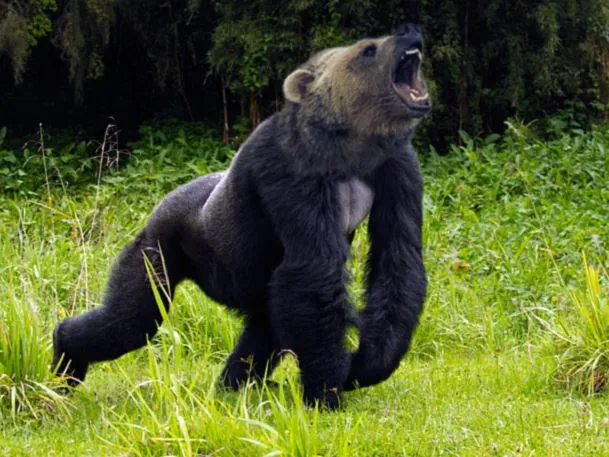
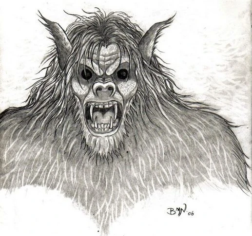
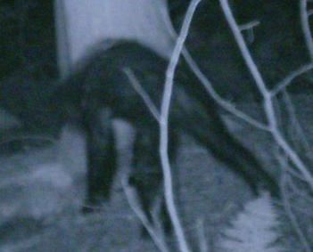
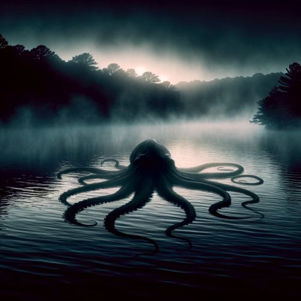
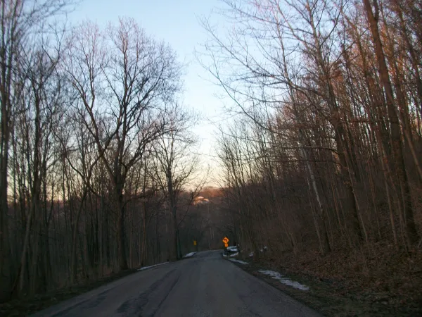
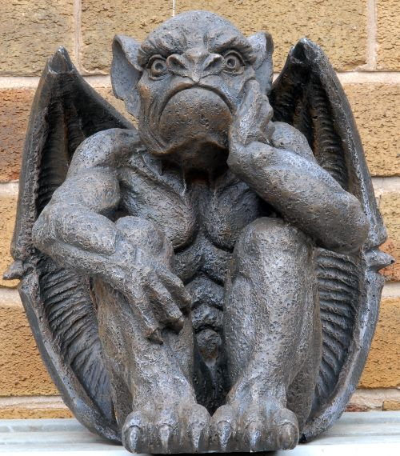
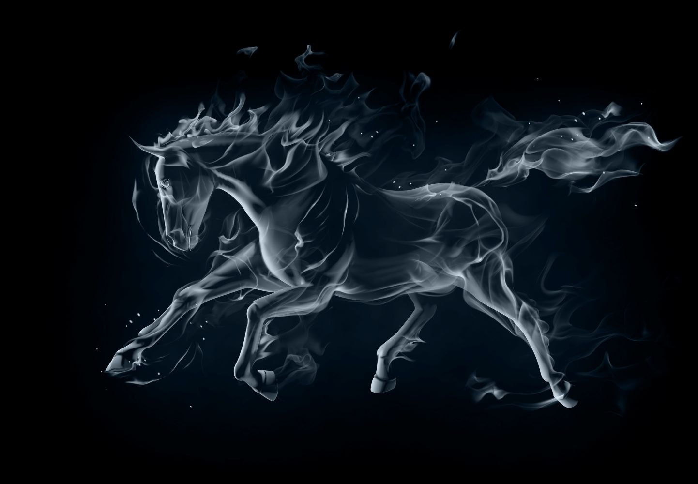
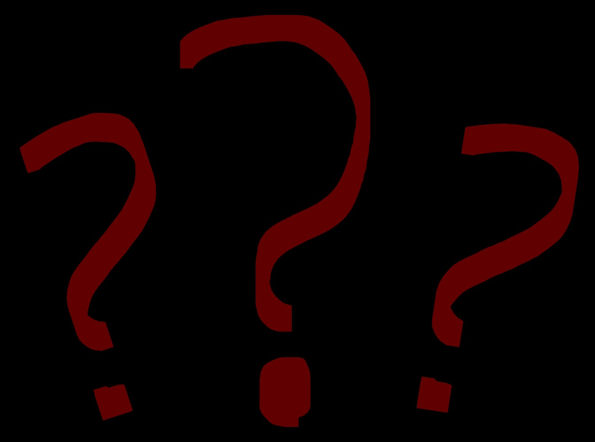
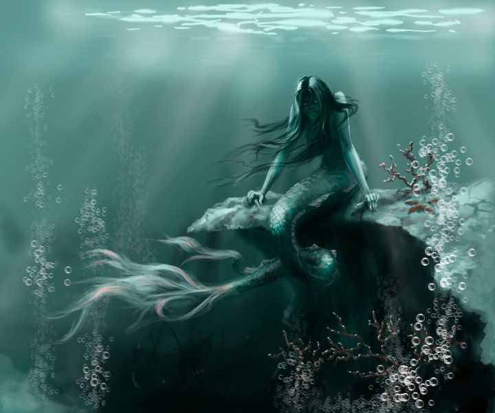
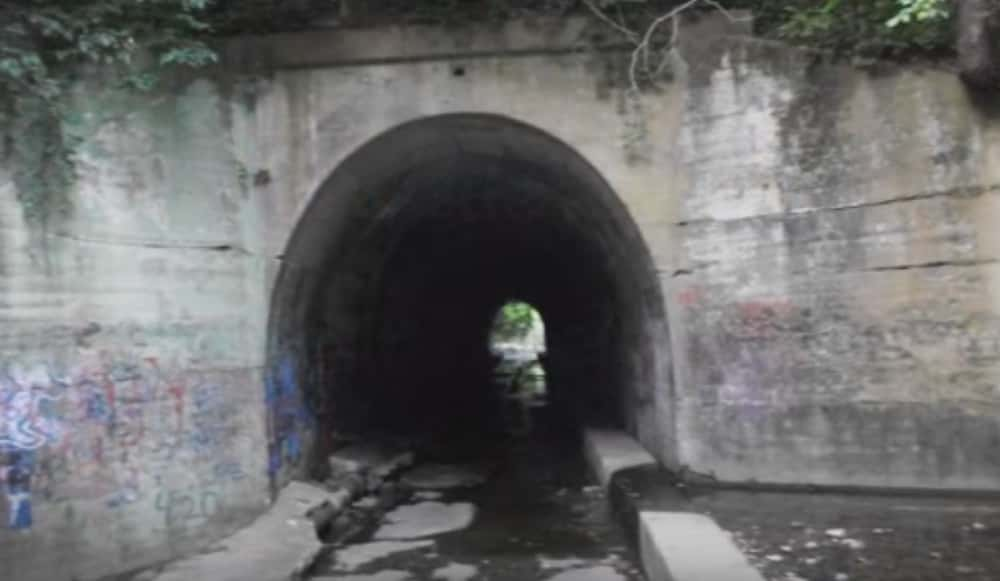
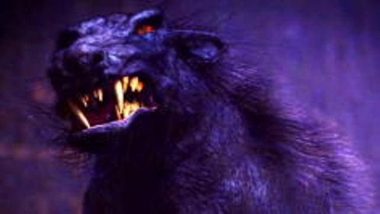
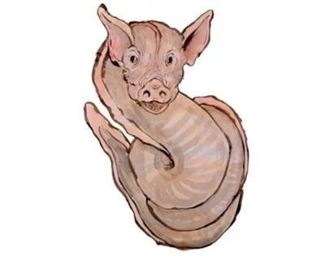
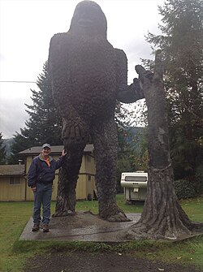
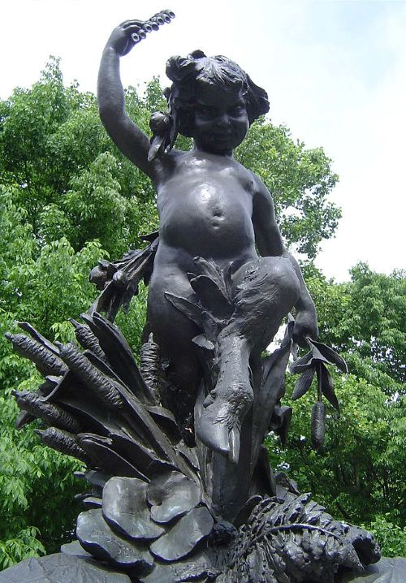
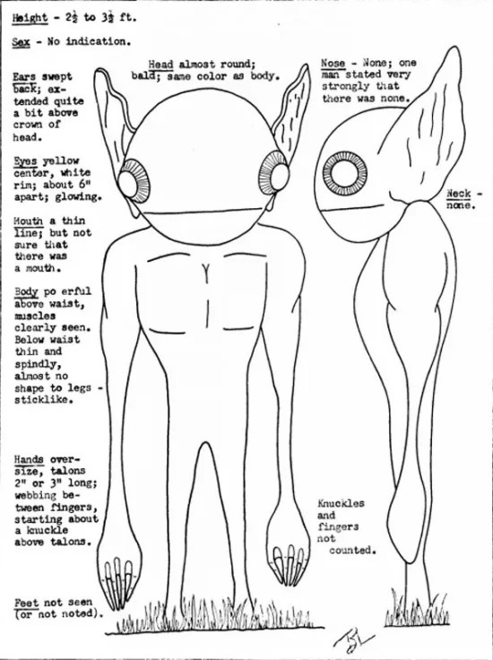
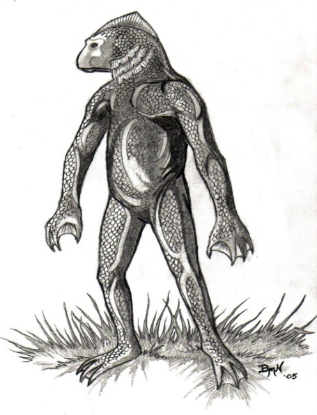
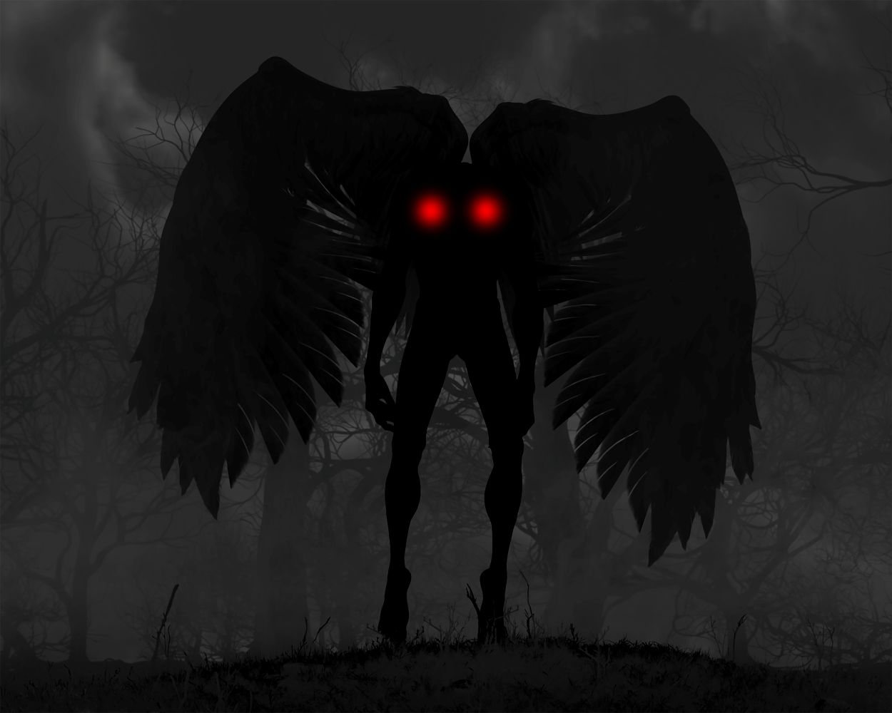
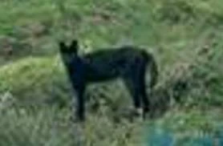
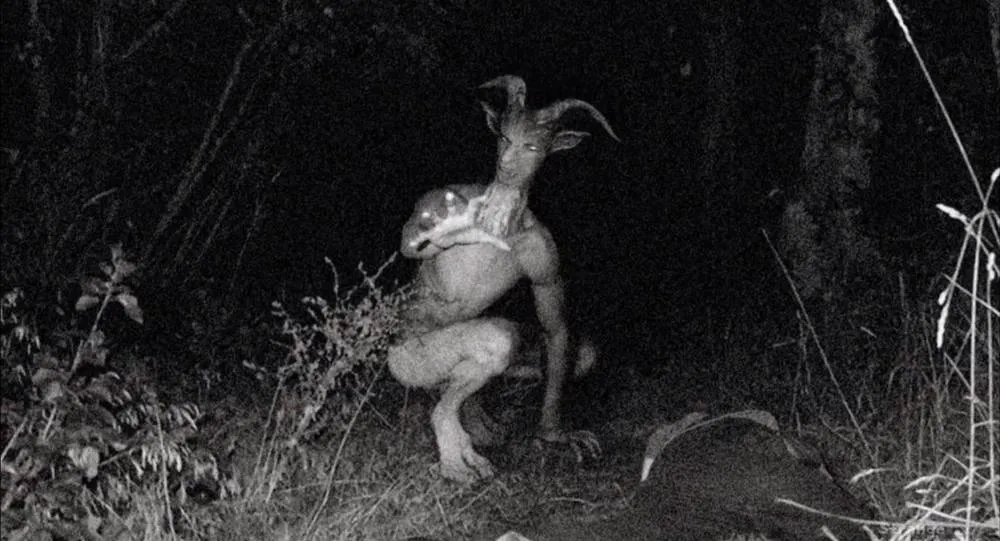
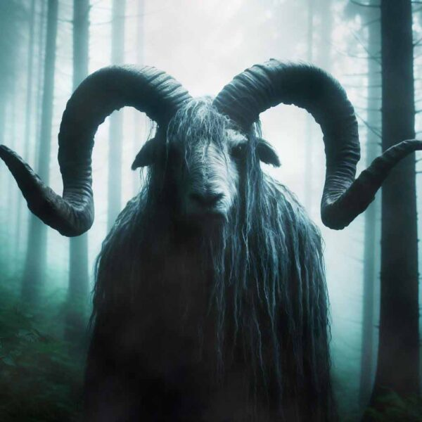
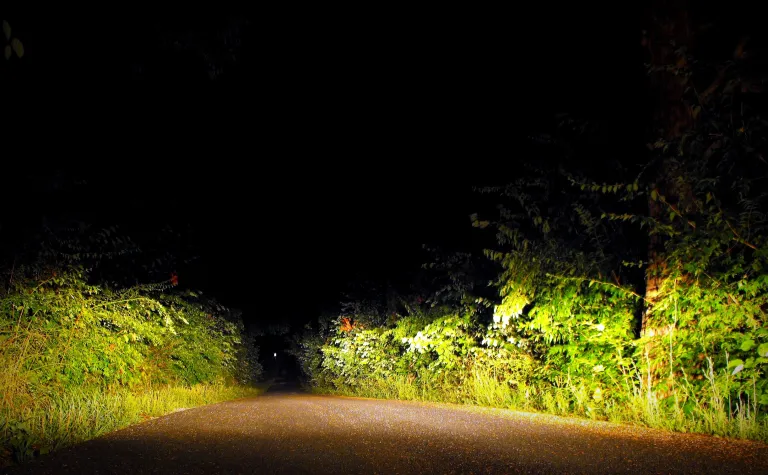
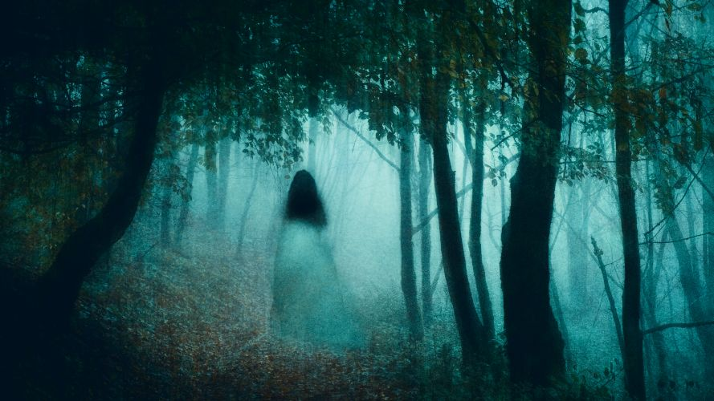
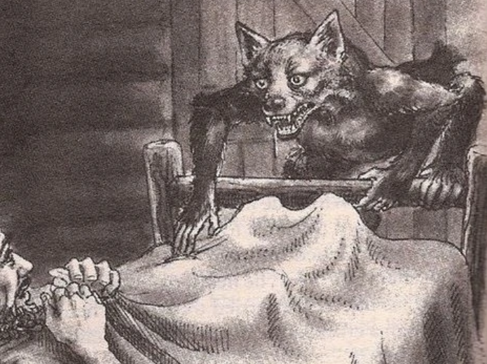
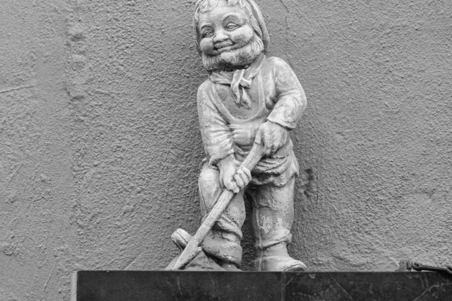
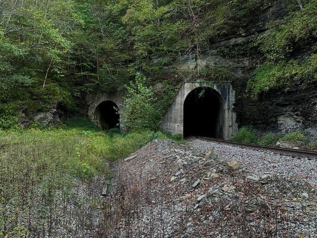
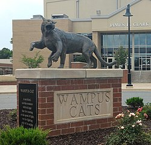
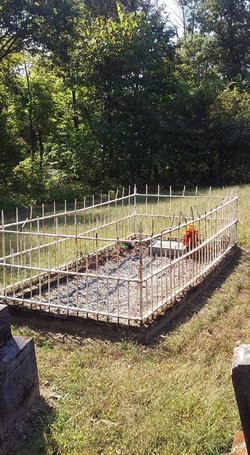